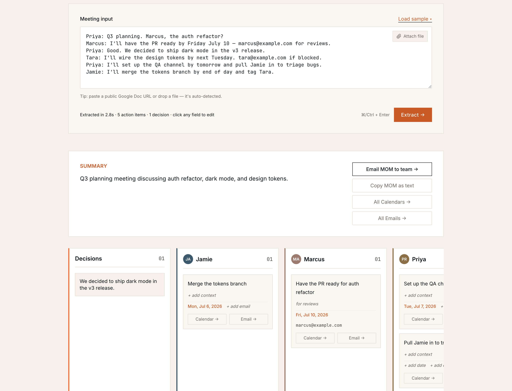

AI Product Case Study
Postmeet.
The last mile of meetings.
Every meeting produces commitments. Most of them evaporate. Postmeet turns a raw transcript into distributed, owned action — in about five seconds, with zero setup.
The problem
Meetings manufacture commitments. Then the commitments go missing.
~70%
of meeting action items are never completed — they live in someone's notes, a Slack thread, a doc nobody reopens.
- whoKnowledge workers spend a huge share of the week in meetings — the output that matters is the follow-through, not the recording.
- gapThe pain isn't capturing what was said. It's doing what was decided.
- costDropped commitments = re-work, missed deadlines, and the quiet erosion of "we said we'd do this."
Industry estimates range ~44–73% of action items never completed (Fellow, Streamli9). Directional — as PM, the first job is to validate with first-party instrumentation before over-investing.
The insight
Everyone is fighting over capture. The last mile is wide open.
Transcribe & summarize
Otter, Fireflies, Fathom, Granola — all competing on better transcripts and summaries. Table stakes now. The commitments they surface still die in a doc.
Distribute & act
Getting each commitment into the tool the owner actually lives in — their calendar, their inbox — is where follow-through is won or lost.
The blocker on the last mile isn't a smarter model — it's setup friction. So the wedge is zero-setup distribution.
The product
Paste a meeting → get owned action → distribute in one click.
Drop it in
Paste a transcript, a public Google Doc URL, or a file. No account.
AI structures it
Summary, decisions, and action items — each with owner, email, due date, and context.
One-click send
Each item opens a prefilled Google Calendar event or Gmail draft. Just hit Save / Send.
The "no-OAuth trick": prefilled Calendar/Gmail URLs open in the user's already-logged-in Google. Time-to-value: ~10 seconds — no integration, no admin approval, no scope review.
See it work
Paste a transcript → the board writes itself.

Real output from the live app — extracted in ~2.8s: a summary, decisions, and one column per owner, each card one click from a prefilled Google Calendar event or Gmail draft.
The AI under the hood
Reliable structure out of an unreliable medium.
Structured output
The model returns a fixed JSON contract (summary / decisions / action items) — pinned in the system prompt, decoded by a tolerant parser. One call, no retry loop.
Guardrails
The prompt extracts only explicit commitments — no invented tasks. Empty fields when data is genuinely absent. This is the difference between useful and hallucinated.
Graceful degradation
A model fallback chain: if the primary is cold or errors, it automatically drops to a backup so the request still succeeds.
The defining decision
I shipped the smaller model on purpose.
Llama 3.1 70B
- latency
- 9s–46s, inconsistent
- reliability
- cold-starts, timeouts
- quality
- marginally higher
Llama 3.1 8B
- latency
- ~2.5s, consistent
- reliability
- steady across runs
- quality
- comparable on this task
Model quality is an input to product value, not the goal. A demo that always works in two seconds beats a "smarter" one that sometimes hangs — reliability builds trust faster than marginal accuracy.
How I'd measure success
One north star, a funnel beneath it, guardrails around it.
Commitment Completion Rate
Of the action items surfaced, what share actually get done? The product only wins if follow-through improves — everything else is a proxy.
Input metrics — the funnel
Guardrail metrics
Making AI decisions rigorously
Vibes don't scale. Evals do.
- setBuild a golden eval set: labelled transcripts with the "true" decisions and action items.
- scoreMeasure precision (did we invent tasks?), recall (did we miss commitments?), and field accuracy (owner / date / email).
- useThat's how I'd actually choose 8B vs 70B, catch regressions, and set a launch quality bar — not by gut.
Every edit is a label
Users correct the extracted items before sending. Those corrections are free, in-domain training data → fine-tune on accepted output → org-specific accuracy competitors can't match without the same data. The eval loop becomes the moat.
Prioritization
What I deliberately left out — and why that's the point.
MVP scope is a hypothesis test, not a feature checklist. I cut everything that wasn't needed to validate the one thing in question: will people extract, then actually distribute?
No database. A refresh clears everything — validating the loop doesn't require storage, and "no data stored" removes privacy friction for testers.
The URL-prefill trick proves the value without OAuth. Real Calendar/Gmail APIs are a scaling investment, made only once the loop is proven.
Single-session, no login. Multi-user is a growth concern, not a validation one.
Extraction reliability, one-click distribution, honest guardrails, 100%-tested logic. The parts the hypothesis actually rides on.
Roadmap & moat
From a one-click helper to the system of record for follow-through.
The core loop
- Paste → extract → distribute
- Zero setup, no OAuth
- Reliable structured output
Capture everywhere
- Browser extension + AI notetaker that auto-joins Zoom / Teams / Meet
- Pulls the transcript itself — no copy-paste
- Native send to Gmail, Outlook & Calendar
Proactive follow-through
- Persistence + team workspaces
- Nudges: "did you ship X?"
- Completion tracking → closes the loop
Moat = the feedback loop. Accepted & edited action items become proprietary training data → accuracy that compounds with usage.
Why this matters for the role
I don't just use AI tools. I make product decisions about them.
Problem framing
Found the non-obvious wedge — the last mile, not capture; friction, not model size.
AI judgment
Model tradeoffs, evals, guardrails, graceful degradation — decisions, with reasons.
Metrics rigor
A north star, an input funnel, and guardrails — measurement designed in, not bolted on.
Prioritization
Scoped an MVP as a hypothesis test; cut with intent; shipped the parts that de-risk it.
Vision
A credible path from a one-click tool to a defensible product with a data moat.
End-to-end
Built, tested (100% coverage), and deployed it solo — from user insight to a live URL.